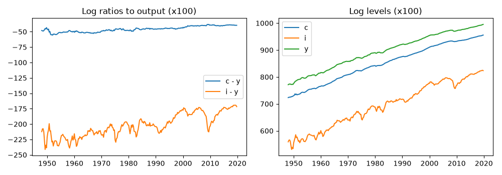
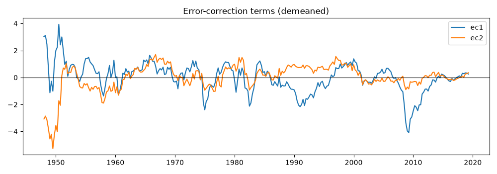
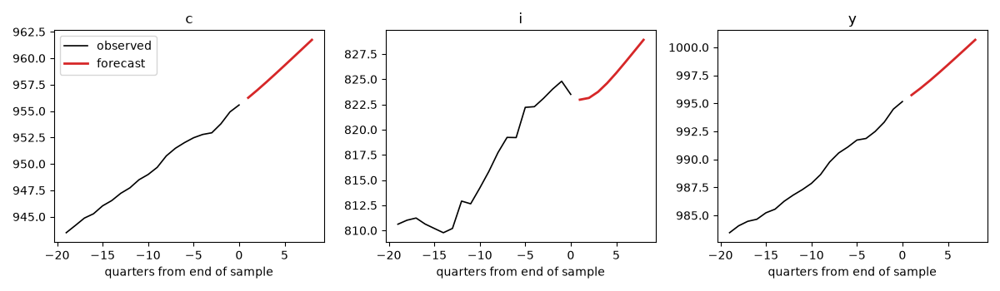

Note
Go to the end to download the full example code.
The great ratios: cointegration and a vector error-correction model#
Balanced growth implies that consumption, investment and output share one stochastic trend: the consumption-output and investment-output ratios are stationary while each series is integrated. King, Plosser, Stock and Watson (1991) made that the test of the real-business-cycle model’s long-run implications, with the Johansen procedure as the instrument. Three I(1) series with one common trend means a cointegrating rank of two.
This example runs the full chain: integration tests on levels and differences, lag-order selection, the Johansen rank test with simulated p-values, estimation of the VECM at the selected rank, the normalized cointegrating vectors against their balanced-growth values, weak-exogeneity tests of the adjustment, and a forecast that respects the long-run restrictions.
Data#
Real personal consumption expenditures, real gross private domestic investment and real GDP, quarterly 1948-2019, as 100 times their logs so that cointegrating residuals read in percent.
import matplotlib.pyplot as plt
import numpy as np
from cultivars.diagnostics.unit_roots import adf, kpss
from cultivars.multivariate.reduced_form.error_correction import VECM
from _fred import fetch
levels = fetch(
{"c": "PCECC96", "i": "GPDIC1", "y": "GDPC1"},
start="1948-01-01",
end="2019-12-01",
frequency="q",
aggregation_method="avg",
units="log",
)
levels *= 100.0
names = tuple(levels.columns)
endog = levels.to_numpy()
fig, axes = plt.subplots(1, 2, figsize=(10, 3.5))
axes[0].plot(levels.index, levels["c"] - levels["y"], label="c - y")
axes[0].plot(levels.index, levels["i"] - levels["y"], label="i - y")
axes[0].set_title("Log ratios to output (x100)")
axes[0].legend()
axes[1].plot(levels.index, levels)
axes[1].set_title("Log levels (x100)")
axes[1].legend(names)
fig.tight_layout()

Orders of integration#
Each series should fail to reject a unit root in levels (ADF with a trend) and reject it in differences; KPSS from the other side. The two ratios should look stationary, which is the balanced-growth claim in its simplest form.
header = ("ADF level", "ADF diff", "KPSS level", "KPSS diff")
print(f"{'series':8s} " + " ".join(f"{h:>10s}" for h in header))
for name in names:
series = levels[name].to_numpy()
cells = (
adf(series, trend="ct").pvalue,
adf(np.diff(series), trend="c").pvalue,
kpss(series, trend="ct").statistic,
kpss(np.diff(series), trend="c").statistic,
)
print(f"{name:8s} " + " ".join(f"{cell:10.3f}" for cell in cells))
for label, ratio in (("c - y", levels["c"] - levels["y"]), ("i - y", levels["i"] - levels["y"])):
test = adf(ratio.to_numpy(), trend="c")
print(f"{label:10s} ADF {test.statistic:7.3f} p = {test.pvalue:.3f}")
series ADF level ADF diff KPSS level KPSS diff
c 0.972 0.015 0.856 0.496
i 0.000 0.000 0.287 0.021
y 0.938 0.000 0.890 0.430
c - y ADF -0.922 p = 0.781
i - y ADF -1.540 p = 0.514
Lag order and the rank test#
The lag order is that of the VAR in levels; the VECM uses one fewer lag in differences. The rank test is Johansen’s trace and maximum eigenvalue sequences, with p-values simulated for the deterministic case in hand. A constant restricted to the cointegrating space is the right case here: the ratios have non-zero means, the growth rates have drift.
candidate = VECM(endog, order=2, rank=1, names=names)
print(candidate.lag_order_selection(max_lags=8).to_table())
order = 2
rank_test = VECM(endog, order=order, rank=1, names=names).rank_test(seed=7)
print(rank_test.to_table())
rank = rank_test.selected_rank(alpha=0.05)
by_max = rank_test.selected_rank(alpha=0.05, statistic="max_eigenvalue")
print(f"Selected rank at 5%: trace {rank}, max-eigenvalue {by_max}")
Lag order selection
================================================================================
Observations: 280 Maximum lags: 8
Consensus: none
--------------------------------------------------------------------------------
p AIC BIC HQIC FPE
0 13.5798 13.6188 13.5955 790044.5398
1 0.3853 0.5411 0.4478 1.4701
2 -0.1292 0.1434* -0.0199* 0.8788
3 -0.1756 0.2139 -0.0194 0.8390
4 -0.1777 0.3286 0.0254 0.8374
5 -0.1880* 0.4351 0.0619 0.8289*
6 -0.1679 0.5720 0.1289 0.8459
7 -0.1373 0.7195 0.2064 0.8726
8 -0.1260 0.8477 0.2646 0.8829
================================================================================
An asterisk marks each criterion's minimum. Every order was scored on the same
sample, so entries within a column are comparable; FPE is on a determinant
scale, so entries across columns are not.
Johansen cointegration rank test
================================================================================
Observations: 286 Variables: 3
Deterministic: constant Exogenous I(1): 0
Selected rank: 3
--------------------------------------------------------------------------------
H0 eigenvalue trace P>trace max-eig P>max-eig
r <= 0 0.1785 79.081 0.0000 56.242 0.0000
r <= 1 0.0476 22.839 0.0094 13.960 0.0704
r <= 2 0.0306 8.879 0.0352 8.879 0.0352
================================================================================
Read down from r = 0 and stop at the first row not rejected: trace selects r =
3, max-eigenvalue selects r = 1.
This is a sequential procedure, so the overall probability of an incorrect rank
is not the 5% attached to any single row.
P-values are empirical over 25,000 draws from the simulated asymptotic null for
the 'constant' case, so the smallest resolvable value is 4e-05.
Selected rank at 5%: trace 3, max-eigenvalue 1
Estimation at rank two#
Balanced growth predicts rank two whatever the test selects in a given sample, and the model below is estimated at that rank so the cointegrating vectors can be read against theory. Normalizing both vectors on output turns them into the two ratios; the balanced-growth values are (-1, 0, 1) and (0, -1, 1).
vecm = VECM(endog, order=order, rank=2, names=names).fit()
print(vecm.summary())
beta = vecm.normalized_beta(on=names.index("y"))
alpha = vecm.normalized_alpha(on=names.index("y"))
print("Cointegrating vectors normalized on y (rows c, i, y):")
print(np.round(beta, 3))
print("Adjustment coefficients on that basis:")
print(np.round(alpha, 4))
VECM(2) Results
================================================================================
Model: VECM(2, r=2) Log-likelihood: -1213.232
Variables: 3 AIC: 2474.464
Rank: 2 BIC: 2562.208
Deterministic: constant HQIC: 2509.635
Observations: 286 Common trends: 1
--------------------------------------------------------------------------------
coef std err z P>|z| [0.025 0.975]
c: const 2.2928 3.1408 0.730 0.465 -3.8631 8.4486
c: D.c.L1 0.0192 0.0833 0.231 0.817 -0.1440 0.1825
c: D.i.L1 0.0536 0.0186 2.886 0.004 0.0172 0.0900
c: D.y.L1 -0.0159 0.1173 -0.136 0.892 -0.2459 0.2141
c: ec1 0.0216 0.0456 0.475 0.635 -0.0677 0.1110
c: ec2 -0.0118 0.0456 -0.259 0.796 -0.1011 0.0775
i: const -16.6556 14.8633 -1.121 0.262 -45.7871 12.4758
i: D.c.L1 3.4888 0.3941 8.852 0.000 2.7164 4.2613
i: D.i.L1 0.3479 0.0878 3.960 0.000 0.1757 0.5201
i: D.y.L1 -1.3675 0.5553 -2.463 0.014 -2.4558 -0.2792
i: ec1 -1.1384 0.2157 -5.279 0.000 -1.5611 -0.7157
i: ec2 -0.5694 0.2157 -2.640 0.008 -0.9920 -0.1467
y: const 6.9038 3.3734 2.047 0.041 0.2920 13.5157
y: D.c.L1 0.3601 0.0895 4.026 0.000 0.1848 0.5355
y: D.i.L1 0.0353 0.0199 1.773 0.076 -0.0037 0.0744
y: D.y.L1 0.0559 0.1260 0.444 0.657 -0.1911 0.3029
y: ec1 -0.0441 0.0489 -0.901 0.367 -0.1401 0.0518
y: ec2 -0.1511 0.0489 -3.087 0.002 -0.2470 -0.0552
beta[1]: c 1.0000
beta[1]: i -0.9060
beta[1]: y 0.1233
beta[2]: c 1.0000
beta[2]: i 0.0174
beta[2]: y -1.0939
================================================================================
Common trends: 1 of 3 max |companion root| = 1.0000
Coefficients and their standard errors describe the short-run regression of
differences on deterministic terms, lagged differences, and the error-correction
terms; they are conditional on beta, which converges fast enough to be treated
as known.
Only the cointegrating space is identified without further restrictions, so read
beta through normalized_beta() and treat any single vector as one basis among
many.
The ec rows are the loadings that pair with beta as the decomposition normalizes
it, not with the basis printed below; rescaling beta rescales alpha inversely,
so the product and every z-statistic are unchanged. normalized_alpha() returns
the loadings on the printed basis.
Orthogonalized impulse responses and the variance decomposition use a Cholesky
factor, which imposes the recursive ordering of `names`; that is a structural
assumption, not a reduced-form result.
Cointegrating vectors normalized on y (rows c, i, y):
[[ 8.107 -0.914]
[-7.346 -0.016]
[ 1. 1. ]]
Adjustment coefficients on that basis:
[[-0.0003 -0.006 ]
[ 0.0174 -0.2907]
[ 0.0007 -0.0771]]
Who adjusts?#
Weak exogeneity of a variable means its equation carries no error-correction term: it drives the common trend without responding to disequilibrium. In the King-Plosser-Stock-Watson reading output is the candidate; the tests say which of the three, if any, the data allow to be treated that way.
for name in names:
test = vecm.weak_exogeneity(name)
print(f"{name}: Wald {test.statistic:7.3f} df {test.df} p = {test.pvalue:.3f}")
c: Wald 0.293 df 2 p = 0.864
i: Wald 34.834 df 2 p = 0.000
y: Wald 10.340 df 2 p = 0.006
The error-correction terms#
The two terms are the deviations from the estimated long-run relations. Mean-reverting, persistent, and with recessions visible as investment falling below its long-run share.
terms = vecm.error_correction_terms()
dates = levels.index[: terms.shape[0]]
fig, ax = plt.subplots(figsize=(10, 3.5))
ax.plot(dates, terms[:, 0] - terms[:, 0].mean(), label="ec1")
ax.plot(dates, terms[:, 1] - terms[:, 1].mean(), label="ec2")
ax.axhline(0.0, color="k", lw=0.8)
ax.set_title("Error-correction terms (demeaned)")
ax.legend()
fig.tight_layout()

Forecasts that respect the long run#
A VECM forecast keeps the ratios tied to their long-run values; a VAR in differences would let them wander. The eight-quarter forecast below is in levels, with the common trend extrapolated by its drift.
steps = 8
forecast = vecm.forecast(steps)
horizon = np.arange(1, steps + 1)
fig, axes = plt.subplots(1, 3, figsize=(12, 3.5))
for ax, (j, name) in zip(axes, enumerate(names), strict=True):
ax.plot(np.arange(-19, 1), endog[-20:, j], color="k", lw=1.2, label="observed")
ax.plot(horizon, forecast[:, j], color="C3", lw=2, label="forecast")
ax.set_title(name)
ax.set_xlabel("quarters from end of sample")
axes[0].legend()
fig.tight_layout()

What to take away#
The sequential rank test is a procedure, not a test: its size is not the 5 percent of any row, and the economics should decide between adjacent ranks when the statistics are close. Reading the normalized vectors against (-1, 0, 1) and (0, -1, 1) is the substantive check; the gap between the estimated investment share and its theoretical value is a known finding from the post-1990 sample and a reason to re-run the exercise ending in 1988, as the original paper did.